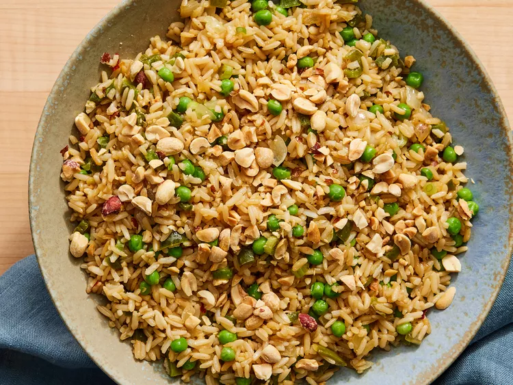

This vegetable fried rice combines the nutty flavor of brown rice with the fresh taste of bell
peppers, baby peas, and other vegetables.
Bring water to a boil in a saucepan. Stir in rice. Reduce heat, cover, and simmer
until liquid is absorbed, about 20 minutes. Set aside.
Heat peanut oil in a large skillet or wok over medium heat. Add onions, bell
pepper, garlic, and red pepper flakes. Cook, stirring occasionally, for 3 minutes.
Increase heat to medium-high. Stir in cooked rice, green onions, and soy sauce;
cook and stir for 1 minute.
Add peas and cook for 1 minute more.